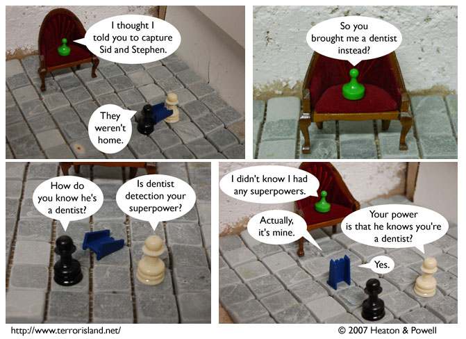

Strip #130
— Wednesday, April 11, 2007
Actually, his superpower is for everyone to know that he is a dentist.
Notes, Thoughts, &c.
Ben’s Notes
We felt the strip needed more super-powered excitement, and this was the most action-packed power we could think of.
Lewis’s Notes
Unbeknownst to Ben and I, this comic is taking some steps away from “slice-of-life” as its genre and towards “action/superhero.”
I have begun to hope that my life will take a similar turn, and I will gain super powers. I would also be pleased (though to a lesser extent) if my friends and associates began to develop super powers.
Also, we got reviewed. Check it.